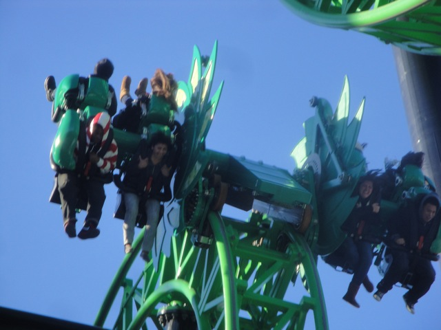
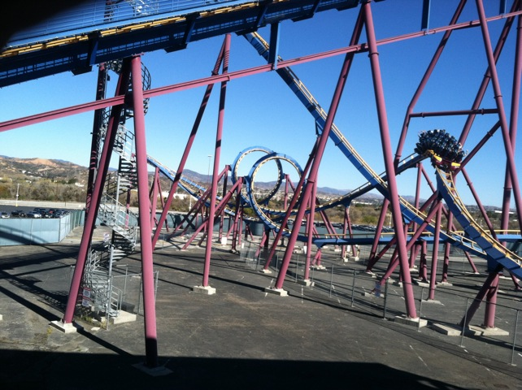
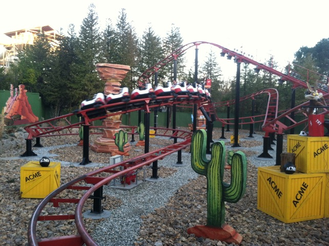

Incrediblecoasters Christmas & New Years 2011/2012
Six Flags Magic Mountain Disneyland Resort Knotts Berry Farm
 All right. Christmas Time and New Years is now over. But during that time period, I managed to take two visits to Six Flags Magic Mountain, two visits to the Disneyland Resort, and two visits to Knotts Berry Farm. And once again, rather than just having many smaller updates, I figured it'd just be best to have one mega update for this time of year. Because nothing says letting go of the Christmas Season and New Years than by posting a bunch of pictures from that time era!!! =) (Seriously though, Christmas stuff in Janurary is a big pet peeve of mine.) Anyways, we first started out this update by getting Allie, and her friend Jenna, on Green Lantern for the first time, which was quite funny.
All right. Christmas Time and New Years is now over. But during that time period, I managed to take two visits to Six Flags Magic Mountain, two visits to the Disneyland Resort, and two visits to Knotts Berry Farm. And once again, rather than just having many smaller updates, I figured it'd just be best to have one mega update for this time of year. Because nothing says letting go of the Christmas Season and New Years than by posting a bunch of pictures from that time era!!! =) (Seriously though, Christmas stuff in Janurary is a big pet peeve of mine.) Anyways, we first started out this update by getting Allie, and her friend Jenna, on Green Lantern for the first time, which was quite funny.

Good news!!! We learned how to make Green Lantern flip like crazy!!!! =)
 All right. Now lets head over and take a spin on Goliath.
All right. Now lets head over and take a spin on Goliath.
Yeah. This ride is pretty much our warm up.

Yeah Yeah. Screams on a parking lot. Get over it.
"Dude!! Scream is running really well today!!" =)
What the hell is going on over here?
This was not a good day to go to In'N'Out. It was packed, and I don't want to say the food was bad today, but I could definetly feel it afterwords.
F*cking Lame!!!! X2 is closed today!!!!! =(
 Meh. No biggy. We'll just have to come back again and ride it.
Meh. No biggy. We'll just have to come back again and ride it.
 All right. Lets take another spin on Viper.
All right. Lets take another spin on Viper.
 While it was running really fast today, it was also really rough with a lot of chestbanging.
While it was running really fast today, it was also really rough with a lot of chestbanging.
Hmm. Should I ride Orient Express or Orient Express. The decision is so tough.

You're never too old for a Vekoma Rollerskater. =)
Oh, and in other news. Bucanner got a new paint job. It looks really nice.
Ninja from Jet Stream.
Speaking of Jet Stream, lets go ride it. I mean, can you think of better weather conditions to ride Jet Stream in? =)
Happy 12 months early Holidays!!!! From Incrediblecoasters.
Oh, and in other news, Santa Paula is burning.
Disneyland Resort
Home